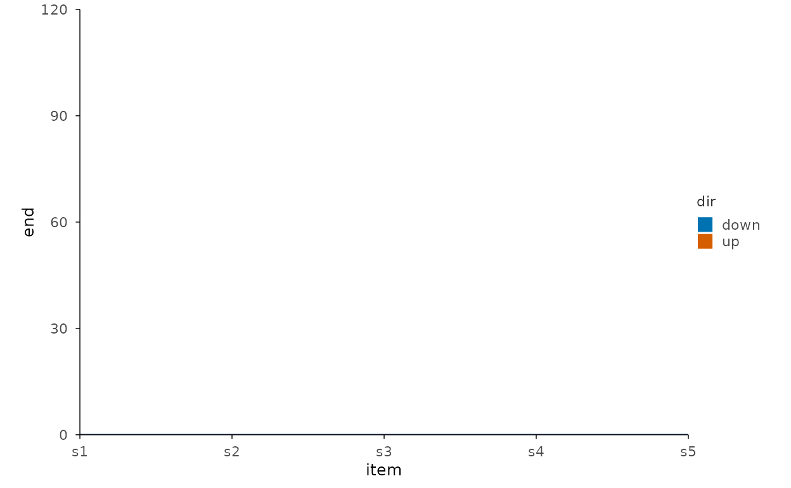
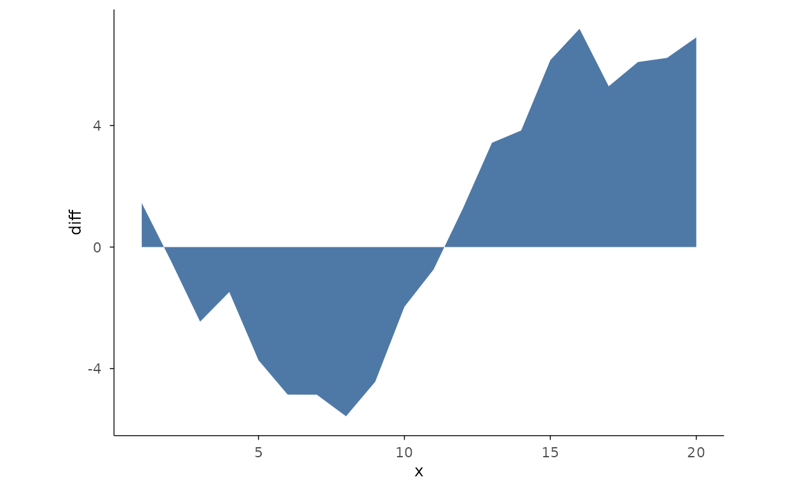
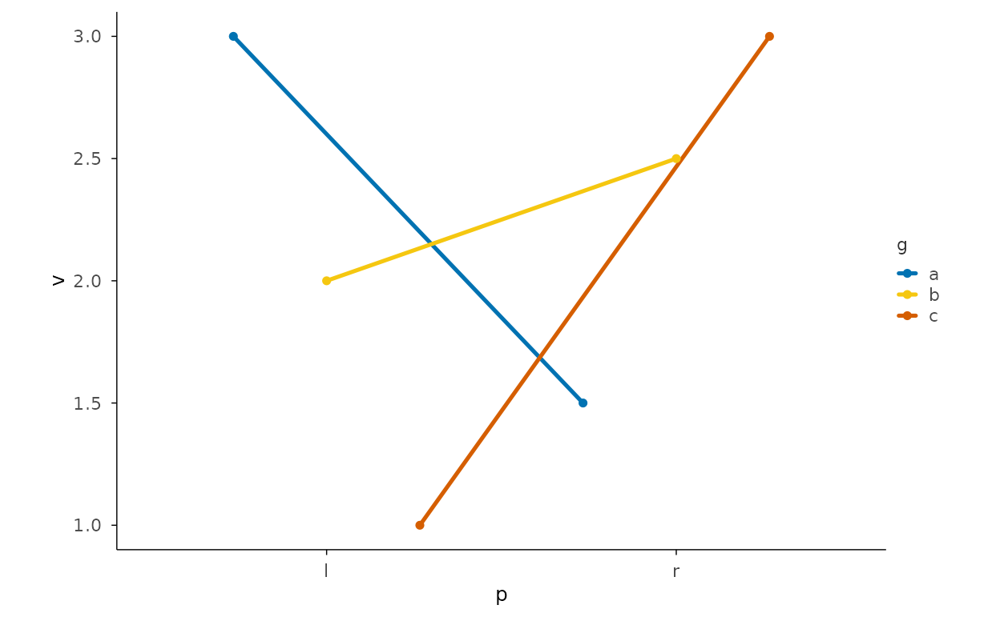

Line and step trends
Area and bands
Recipe: waterfall (R-03)
Cumulative sum preprocessing + mark_bar with rise/fall
colours.
set.seed(7)
steps <- data.frame(
item = paste0("s", 1:5),
delta = c(100, -40, 30, -20, 50)
)
steps$end <- cumsum(steps$delta)
steps$start <- steps$end - steps$delta
steps$dir <- ifelse(steps$delta >= 0, "up", "down")
steps |>
plotit(encode(x = item, y = end, fill = dir)) |>
mark_rect(mapping = encode(xmin = item, xmax = item, ymin = start, ymax = end)) |>
mark_rule(yintercept = 0, colour = "#4E79A7")
Recipe: difference band (R-10)
Two series, positive/negative area split.
set.seed(7)
d <- data.frame(
x = 1:20,
a = cumsum(rnorm(20)),
b = cumsum(rnorm(20))
)
d$diff <- d$a - d$b
# Equivalent: area with sign-split fill
d |>
plotit(encode(x = x, y = diff)) |>
mark_area()
Recipe: slope chart
mark_line + mark_point +
mark_text for rank changes between two points.
set.seed(7)
sl <- data.frame(
p = rep(c("l", "r"), each = 3),
g = rep(letters[1:3], 2),
v = c(3, 2, 1, 1.5, 2.5, 3)
)
sl |>
plotit(encode(x = p, y = v, group = g, colour = g)) |>
mark_line() |>
mark_point()